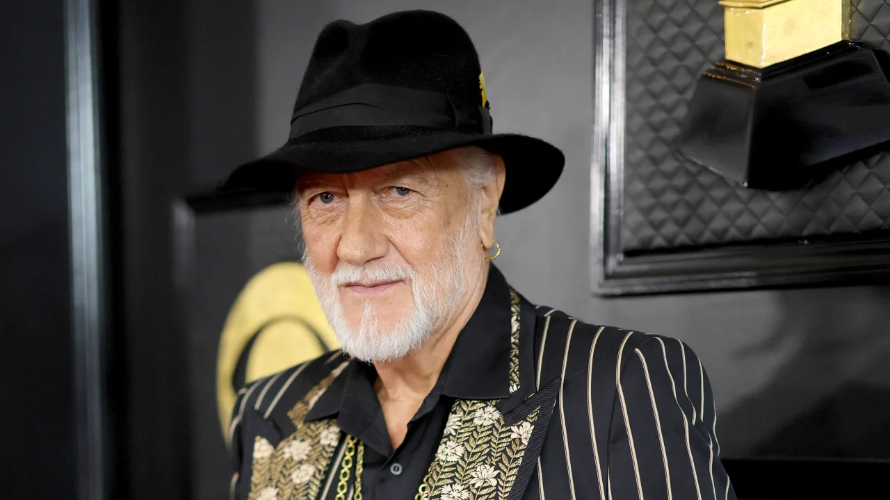

Musician Mick Fleetwood of the famed group Fleetwood Mac said his
restaurant, Fleetwood’s on Front St, in Lahaina, Hawai’i has been
lost due to the wildfires raging there.
He shared a picture of his eatery’s sign to his verified Instagram
account on Wednesday, writing in the caption that Maui and Lahaina
have been his home “for several decades.”
“This is a devastating moment for MAUl and many are suffering unimaginable loss,” Fleetwood continued. “Fleetwoods on front Street has been lost and while we are heartbroken our main priority is the safety of our dear staff and team members.”
While the COVID-19 challenges are not over, current data allows UNMC to take a step forward
to ease its COVID-19 safety precautions across its rural and urban campuses. UNMC leaders
will continue to monitor local case counts and modify its guidance as needed.
What's changing:
- Masking is recommended but optional in non-clinical settings, including research and
administration areas, on UNMC campuses (including, but not limited to, classrooms,
cubicles, conference rooms, study rooms, breakrooms, hallways, elevators and other
common areas).
- Masking is strongly recommended when performing research procedures that require two
or more people to be in close contact for prolonged periods of time.
- Masking and social distancing are recommended but optional for UNMC gatherings. Safety
event plans for gatherings are no longer required.
-
In non-clinical settings on UNMC campuses, masking is strongly recommended for visitors,
vendors and individuals with an approved exemption to the vaccine policy.
What's not changing:
- Masks will continue to be required for all students, staff, faculty, visitors, vendors
and individuals with an approved exemption to the vaccine policy in buildings and
spaces that include patient care areas and in common areas accessed by patients.
Buildings with patient care areas include but are not limited to the Munroe-Meyer
Institute, the Fred & Pamela Buffett Cancer Center, Lied Transplant Center, Poynter
Hall, Durham Outpatient Center, University and Clarkson Towers and UNMC dental clinics
.
- Symptomatic individuals, regardless of immunization status, should mask and report to
the Employee Health clinic, Student Health clinic or personal health care provider as
appropriate. These individuals should remain at home and continue to mask until
cleared by one of these clinics.
In research areas:
- Masks are required when conducting research in any clinical area and when conducting
any face-to-face clinical research (unless outdoors).
- Masks may continue to be required by some shared facilities (including cores and
comparative medicine) that have small procedure rooms. Signs will be posted in these
areas and communicated to users.
- Masking continues to be required for specific research activities (such as surgical or
other sterile procedures, high biosafety risk, in high-containment spaces) or as
required for certain individuals.
As an academic health sciences center, UNMC asks people to remain respectful of anyone who
continues to mask in order to minimize their risk. Masks are recommended for individuals
who are immunocompromised and/or at higher risk of severe disease, as well as those who
are more comfortable masking or choose to do so for any other reason.
Testing for COVID-19 remains an important tool in the med center’s COVID-19 response. The
saliva testing site at Williams Science Hall also incorporates testing for Influenza A and B.
Testing resources for all campuses are available on the UNMC Campus Guidance page.
UNMC will continue to monitor data for its campuses and communities to inform its COVID-19
response and adjust as needed, which may include further reduction in COVID-19 precautions or
requiring masks in non-clinical spaces if warranted.